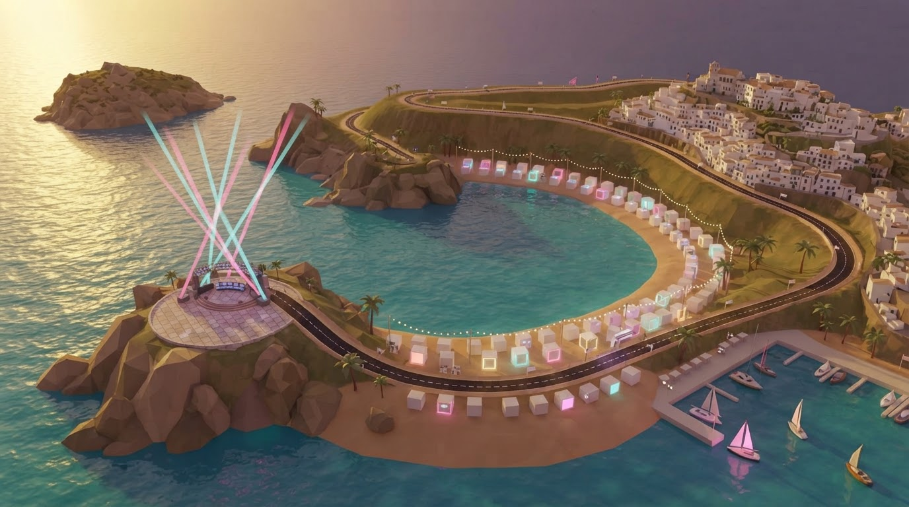

Before a ride in Ibiza the camera flies the course from above, from the grid to the finish line, in 9 s (L2-179 AC2). The caption steps through five places, a fifth of the flight each: The waterfront, The Strip, The DJ terrace, The finale, The finish. The picture is the design’s target still and stands in for the canvas; the course as built is 8.4 km from a grid to a finish line, not a loop. The course loads here, so the ride has no wait of its own. Skip flyover goes straight to the grid; Cancel goes back to The Class. With reduced motion this screen is not shown (AC9).